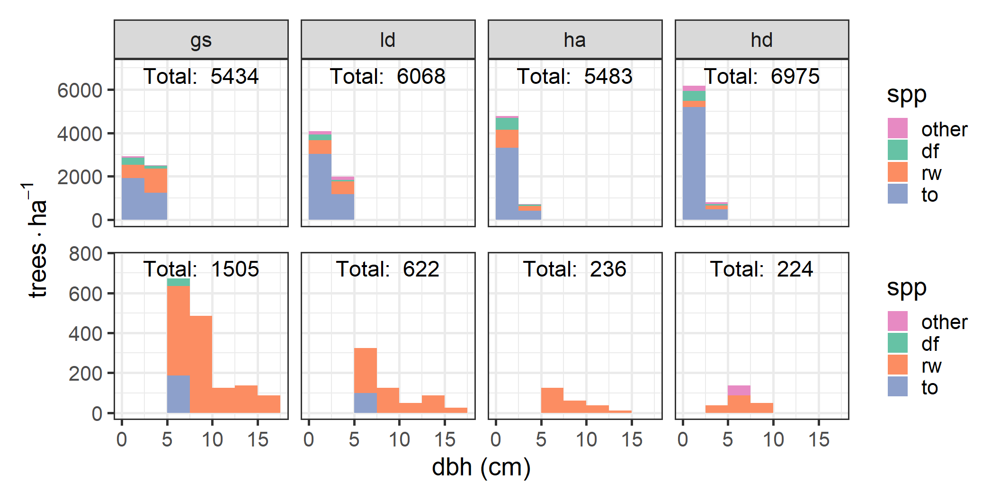
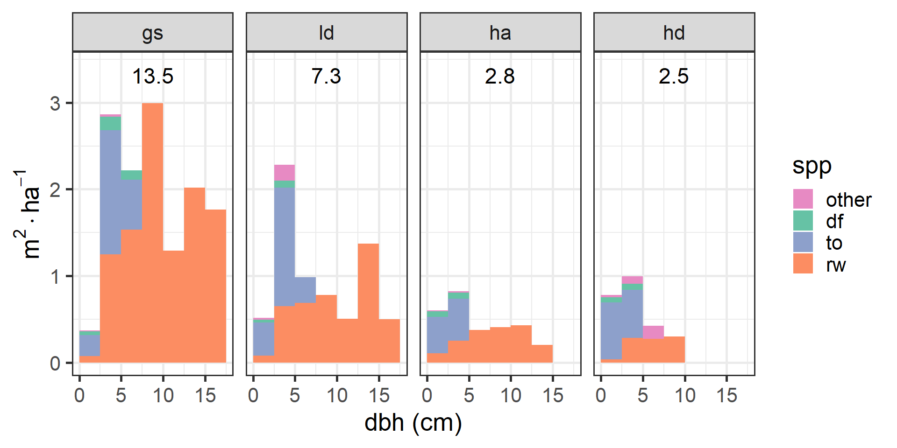
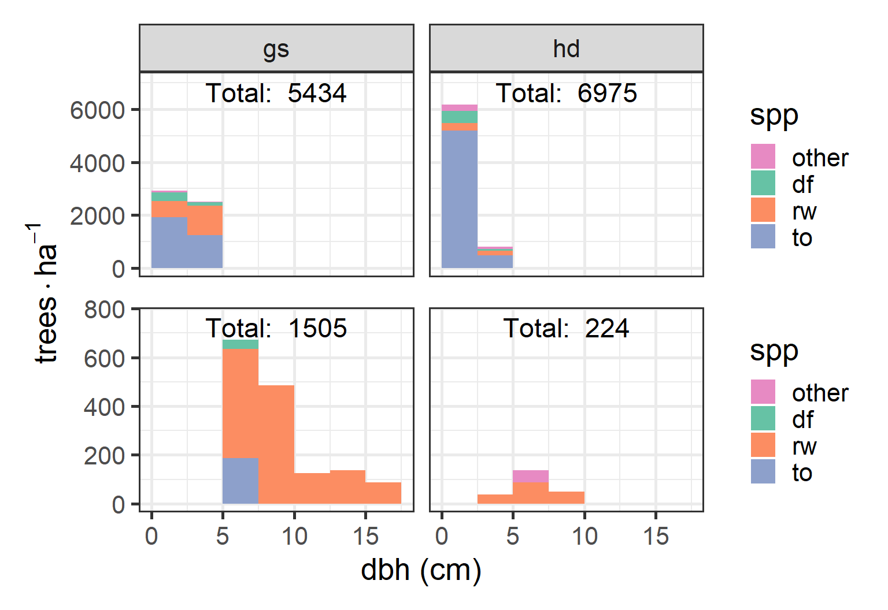

Regeneration and Fuel Loading with Varying Overstory Retention in Redwood Stands 10 Years after Transformation to Multiaged Management
Thesis committee presentation by Judson Fisher
Thank you
Today’s plan
- Introduction
- What we did
- Some results
- My questions
- Your questions
A multiaged silviculture experiment
An important part of ecological forest management
- Diversity of forest structures == Diversity of silvicultural techniques
- Predominance of even-aged management
- This work contributes to our understanding of multiaged stand development
- Greater understanding -> increased adoption
Suitability of redwood forests
- Timber value
- Shade tolerance
- Reliable regeneration
Today’s plan
- Introduction
- What we did
- Some results
- My questions
- Your questions
What we did
- Implementation
- Sampling procedure
- Analysis
Initial harvest: 2012
- 16 one-hectare blocks
- GS: Group selection
- LD: Low density dispersed
- HA: High density aggregated
- HD: High density dispersed
These four treatments were replicated across four sites.
The treatments are defined in terms of retained trees after harvest
What we did
- Implementation
- Sampling procedure
- Analysis
The plot structure
- Macro plot (Outline)
- Regeneration plots (green circles)
- Fuel transects (orange lines)
- Fuel sampling cylinders (orange circles)
Sprout height
- 25 each of tanoak and redwood sprout clumps were selected for measurement
- Tallest sprout in clump measured at years 1, 5, and 10
Regeneration density and composition
We recorded diameter and species of all sprouts and seedlings taller than 1.4 m
Downed woody fuel
- Particles were tallied by size class
- Counts were converted to load (Mg/ha) using linear intersect theory and parameters from the literature
Litter and duff
- Litter and duff depth measured from a representative location within the sampling cylinder
- Depth-to-load equation taken from the literature
Vegetation
- We estimated percent cover and average height
- Converted to load using a constant bulk density
What we did
- Implementation
- Sampling procedure
- Analysis
Sprout height
- Frequentist framework
- Model selection was performed using AIC
- Treatment and year were factors
- Tested various random effects
- Included fixed effect model for dispersion
- Model checked using simulated residuals
Regeneration density
I report on:
- Species diameter frequency distributions and
- Basal area weighted frequency distributions
for each treatment.
Fuel
- Bayesian framework
- Separate models for six different fuel classes
- Used \(gamma\) hurdle model: zeros modeled separately as a proportion
- Priors determined from data with support from literature
- Model checked with posterior predictive distribution
Today’s plan
- What we did
- Why we did it
- Some results
- My questions
- Your questions
Sprout height model
Sprout height: year 10
Regeneration density: frequency

Regeneration density: basal area

Fuel: means
Fuel: comparisons

Today’s plan
- What we did
- Why we did it
- Some results
- My questions
- Your questions
My questions
- How to add post-pct to the story
- Potential questions generated by regen. distributions
- “Asking questions” of the height model: confidence intervals
Today’s plan
- What we did
- Why we did it
- Some results
- My questions
- Your questions
Downed woody fuel classes
| 1 hr |
< 0.64 |
1 |
| 10 hr |
0.64 - 2.5 |
2 |
| 100 hr |
2.5 - 7.6 |
4 |
| 1,000 hr |
> 7.6 |
10 |
Vegetation: Load calc.
We calculated average load for herbaceous and woody vegetation:
\[load = ht. \times pct. cover \times \rho,\]
where \(\rho\) is a bulk density of 8 and 18 Mg/ha/m for herbaceous and shrub components, respectively.
Fuel bed depth
We estimated the combined average fuel bed depth of all litter and downed woody debris within the sampling cylinder.
Regeneration density: frequency

Year 1 height measurement